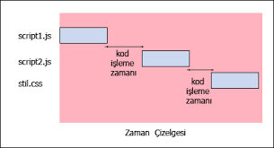

Javascript’i web sitelerine eklemek
Javascript dosyaları bir web sitesine iki şekilde eklenir. Birincisi satıriçi(inline), ikincisi ayrı bir javascript dosyası hazırlayıp harici olarak eklemek.
inline olarak kullanıma bir örnek;
Aynı script'i başka bir .js uzantılı dosyaya ekleyip dışardan bu dosyayı ekleyebiliriz.
Örneğin yukardaki scripti merhaba.js adlı dosya olarak kaydedelim;
Şimdi bu dosyamızı web sayfamızda çağıralım;
Yukarıda kullandığımız her iki yöntem ile de aynı sonucu alırız. Harici javascript dosyası ile eklemenin avantajları vardır;
- Bir dosya ile tüm sitedeki javascript dosyalarını idare ederiz ve güncellemeleri tek dosya ile daha kolay yaparız.
- Sayfa daha hızlı yüklenir, tek dosya ön belleğe alınınca diğer sayfalarda tekrar tekrar yüklenmediği için sayfalar daha hızlı açılır.
@2016 Contact abdullahcelik6@gmail.com